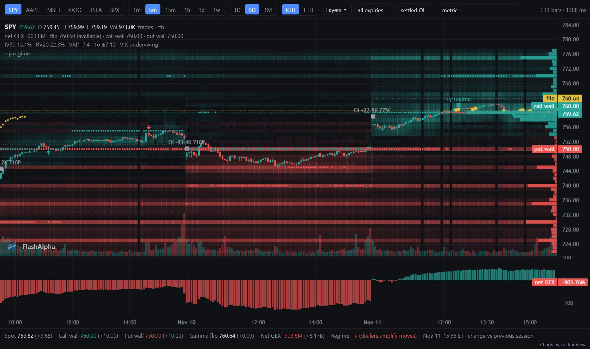
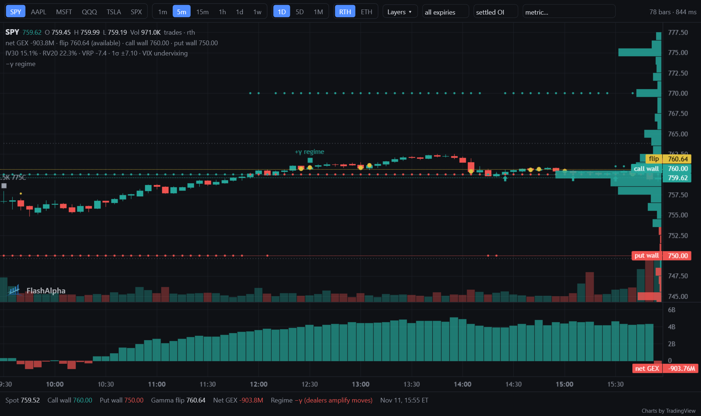
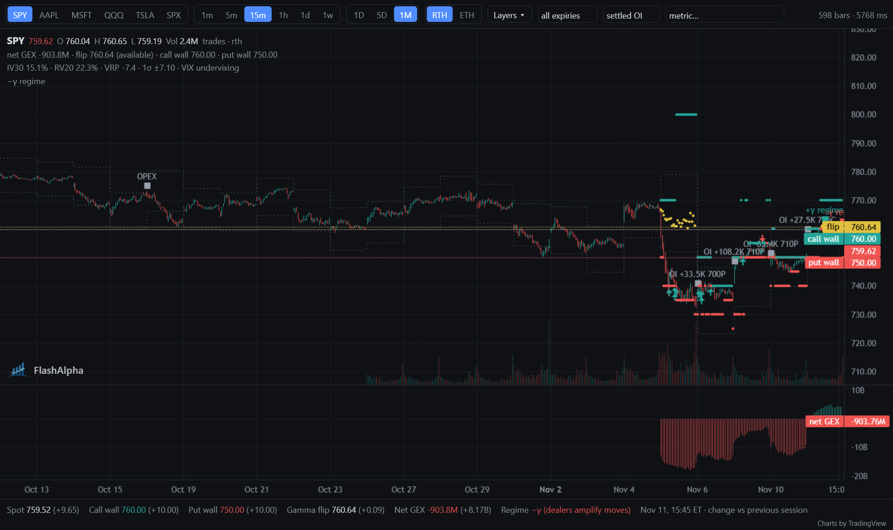
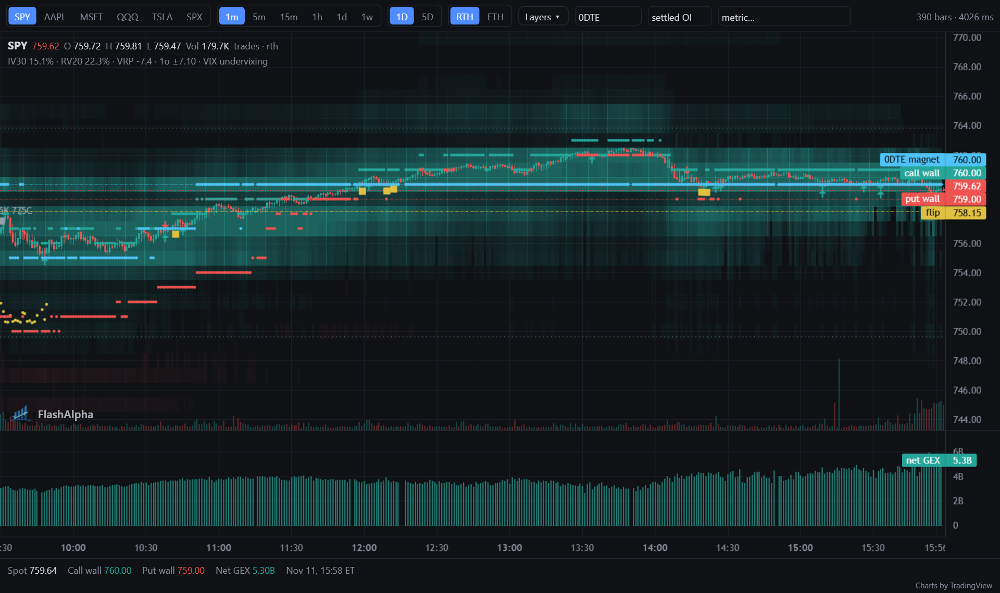
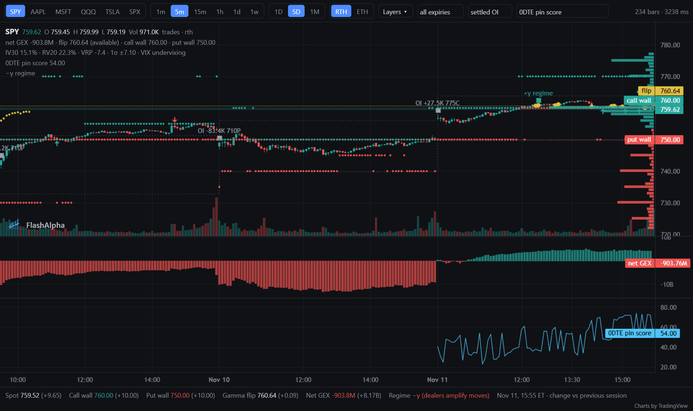

Candles and volume
Price bars from 1 minute to 1 week, on a US Eastern time axis. Green bars closed higher than they opened, red bars lower; volume bars at the bottom use the same colours.
Main pane, volume along the bottom.
An embeddable JavaScript candlestick chart that draws options gamma exposure (GEX) levels on the price: call wall, put wall, gamma flip, and max pain. Built on TradingView Lightweight Charts™, with data from the FlashAlpha API or your own backend.
Live demo with generated data; the page makes no data requests. Drag to scroll, use the wheel or pinch to zoom, and open the Layers menu to turn layers on or off.
Each element of the demo above, with the colour it uses on the chart. Levels are drawn per bar, as a row of dots on the same time axis as the candles, so you can see where the price traded against each level and when the level moved. The latest value is labelled on the price axis.
Price bars from 1 minute to 1 week, on a US Eastern time axis. Green bars closed higher than they opened, red bars lower; volume bars at the bottom use the same colours.
Main pane, volume along the bottom.
The strike with the largest call gamma exposure. Dealer hedging near it tends to slow rallies, so traders often read it as resistance.
Green dots above the price, labelled "call wall".
The strike with the largest put gamma exposure. Dealer hedging near it tends to slow declines, so traders often read it as support.
Red dots below the price, labelled "put wall".
The price where net dealer gamma changes sign. Above it, dealer hedging tends to dampen moves; below it, hedging can amplify them. It is gray while the data source marks it as not yet certified.
Yellow dots, gray when unverified, labelled "flip". In the demo the first half hour of each session is gray.
The strike at which open options would expire with the least total value for their holders. Some traders watch it as a pull on the price into expiration.
Purple dots, labelled "max pain". Layer maxpain.
Muted candles after the last stored bar, built from spot prices until the full bars arrive. They keep the chart current between bar updates.
Right edge. The legend shows the source as "spot".
Symbol, OHLC, and volume for the bar under the crosshair, and a second line with the flip (and its status), call wall, put wall, and max pain for that bar. Move the crosshair to read the levels at any point in the past.
Top left. On phones it shows one line until you tap the chart.
The latest spot, walls, flip, and max pain as text, each with its change against the previous session's close. A wall that moved overnight is often the first thing to check before the open.
Under the chart. Plain HTML, so people and search engines can read it.
Session volume-weighted average price, added by this page with registerLayers. It shows how to draw your
own layers on the same chart; it is not part of the core.
Light blue line, intraday resolutions only.
With a FlashAlpha chart key, the chart reads from the FlashAlpha API and adds the layers below to the Layers menu. The layers you get depend on your plan; a layer outside your plan shows a "not in your plan" note. Screenshots are from SPY.

Net GEX for every strike, drawn behind the candles for each bar: green where dealers are estimated to be long gamma, red where they are short. Brighter bands are larger exposure.
Use it to see where gamma is concentrated and how the concentration shifts over the days, not only where the single largest strike is.

Net GEX per strike as horizontal bars at the right edge of the price pane, for the latest snapshot or for the bar under the crosshair.
Read it next to the price axis: long bars mark the strikes that carry the most exposure, and the sign tells you whether hedging there tends to dampen or amplify moves.

Total net GEX per bar as a histogram in its own pane under the price. Bars above zero are long-gamma, below zero short-gamma.
A move from positive to negative is a regime change: the market goes from conditions where hedging dampens moves to conditions where it can amplify them.

The 0DTE scope recomputes the walls, flip, heatmap, and net GEX from same-day expiries only. The 0DTE magnet marks the strike that same-day positioning is estimated to pull the price towards.
Same-day options can dominate intraday hedging, so their levels can differ from the all-expiries view, most of all late in the session.

The metric picker draws one per-minute series as a line in its own pane: vanna, charm, delta exposure, IV, the 0DTE pin score, hedging estimates, and more. The screenshot shows the 0DTE pin score.
Use it to line up a metric with the price and the levels on the same time axis.
Markers when a wall is set, moves, or is cleared; when the price touches, rejects, or breaks a level; when the flip is crossed or the regime flips; on large open interest changes; and on earnings and expiration dates.
A 1σ band around the price from implied volatility: the range the options market prices for the period. A close outside the band is a larger move than the market expected.
Levels are computed from settled open interest by default. The live basis switches them to intraday open interest estimates, so walls and flip can react to positions opened during the session.
| Basic | Call wall, put wall, gamma flip, max pain, net GEX pane. |
|---|---|
| Growth | Everything in Basic, plus the strike heatmap, GEX profile, 0DTE scope and magnet, level events, expected move, and metrics. |
| Alpha | Everything in Growth, plus the live open interest basis. |
For plans and keys, see flashalpha.com.
Load Lightweight Charts 5 and the chart core, add a container with a height, and mount the chart. No build step and no framework.
<script src="https://unpkg.com/lightweight-charts@5.0.0/dist/lightweight-charts.standalone.production.js"></script>
<script src="flashalpha-chart-core.js"></script>
<div id="chart" style="height: 480px"></div>
<script>
FlashAlphaChart.mount(document.getElementById('chart'), { symbol: 'SPX', resolution: '5m', source: mySource });
</script>To use FlashAlpha data, pass apiKey with your chart key instead of source. The
README covers the one-line embed, every option,
and the layer plugin API.
source object with symbols, bars, and
charts methods. Times are UTC ISO 8601; a null value is drawn as a gap.1m, 5m, 15m, 1h, 1d,
1w; regular hours or extended hours. Levels are drawn on intraday resolutions.